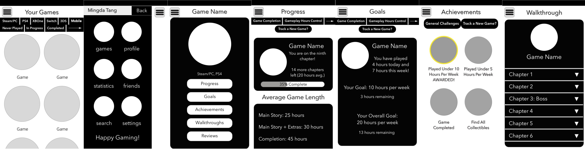
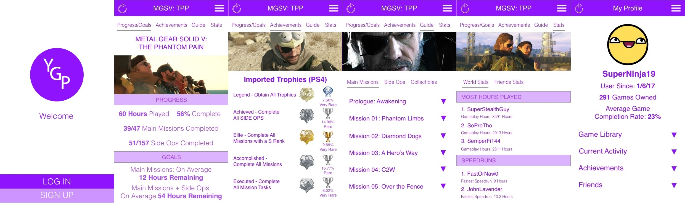

From personal experience and frequent discussions with online friends, I realized that gamers want a dedicated application to keep track of their video game libraries so that they can monitor their progress (e.g. game-play hours) with each game, compare and compete with friends between games, and receive personalized recommendations based on the amount of hours played and other related factors.
This is my first basic wireframe. Just dropping a few ideas. Scroll down!
Here is a collage of some of the screens I created.
Click on the Interactive Wireframe button below to see all of the screens in action.
An essential part of UX design is iterating and reiterating on wireframes and prototypes based on others' feedback.
So here are some of the comments that have been left for me, which I am working on at this time.
A main issue of my wireframe is that I simply have too many screens (18 SCREENS!) and too many options for the scope of this project.
With that feedback in mind and another round of feedback, I created a hi-fi prototype that I will continue to improve on.
